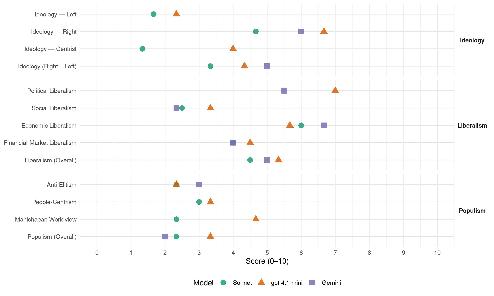

SGP (Netherlands, 2010)
manifesto_id 22952_201006
Get full text: This site shows derived annotations and short verbatim quotes only. The full manifesto text is © Manifesto Project / WZB — obtain it via manifesto-project.wzb.eu using the manifesto_id above.
Headline scores
| Dimension | Sonnet | gpt-4.1-mini | Gemini |
|---|---|---|---|
| Populism (Overall) | 2.3 | 3.3 | 2.0 |
| Anti-Elitism | 2.3 | 2.3 | 3.0 |
| People-Centrism | 3.0 | 3.3 | – |
| Manichaean Worldview | 2.3 | 4.7 | – |
| Ideology (Right − Left) | 3.3 | 4.3 | 5.0 |
| Liberalism (Overall) | 4.5 | 5.3 | 5.0 |
| Political Liberalism | – | 7.0 | 5.5 |
| Social Liberalism | 2.5 | 3.3 | 2.3 |
| Economic Liberalism | 6.0 | 5.7 | 6.7 |
| Financial-Market Liberalism | 4.0 | 4.5 | 4.0 |
Evidence per dimension
Economic Liberalism
Gemini · score 7.0 · verified · chunk 1
“minder regeltjes voor gezinnen en bedrijven”
minder bemoeizucht leidt bovendien tot minder bestuurlijke drukte voor de overheid en minder regeltjes voor gezinnen en bedrijven. Aan de andere kant kan extra ruimte om te
Gemini · score 6.0 · verified · chunk 2
“ruimte voor eigen belastingheffing vergroot”
belastinggebied. Om meer mogelijkheden voor eigen beleid te ontwikkelen, moet de ruimte voor eigen belastingheffing vergroot worden, onder gelijktijdige verlaging van de
Gemini · score 7.0 · verified · chunk 3
“ondernemerschap niet belemmerd wordt door allerlei overbodige regels”
cruciaal. De SGP wil dan ook fors investeren in onderwijs en innovatie om de verdiencapaciteit voor de toekomst te vergroten. Daarnaast is van belang dat ondernemerschap niet belemmerd wordt door allerlei overbodige regels. Ook investeert de SGP in andere
gpt-4.1-mini · score 6.0 · verified · chunk 1
“beperkte mogelijkheden en bevoegdheden”
Beperkte bevoegdheden: de regering moet zich alleen bemoeien met wat noodzakelijk is om het maatschappelijke en economische leven in goede banen te leiden.
gpt-4.1-mini · score 5.0 · verified · chunk 2
“De overheid moet al het mogelijke doen om de regeldruk en administratieve lastendruk omlaag te brengen.”
De overheid moet al het mogelijke doen om de regeldruk en administratieve lastendruk omlaag te brengen. Bij het vormgeven van nieuwe regelgeving moet dit aspect zwaar wegen.
gpt-4.1-mini · score 6.0 · verified · chunk 3
“De SGP wil juist de belastingen verlagen op arbeid en winst om zo een spoedig herstel te stimuleren”
De SGP wil juist de belastingen verlagen op arbeid en winst om zo een spoedig herstel te stimuleren. Kortom: niet extra belasten, wel snoeien in het woud van subsidies en regelingen.
Sonnet · score 5.0 · mixed · chunk 1
“marktwerking alleen verantwoord als duidelijk is dat publieke belangen”
De SGP vindt marktwerking alleen verantwoord als duidelijk is dat publieke belangen, zoals kwaliteit, toegankelijkheid, continuïteit en betaalbaarheid goed geborgd zijn.
Sonnet · score 5.0 · mixed · chunk 2
“regeldruk en administratieve lastendruk omlaag”
De overheid moet al het mogelijke doen om de regeldruk en administratieve lastendruk omlaag te brengen.
Sonnet · score 6.0 · verified · chunk 3
“belastingen verlagen op arbeid en winst”
De SGP kiest dan ook niet voor belastingverhoging. De SGP wil juist de belastingen verlagen op arbeid en winst om zo een spoedig herstel te stimuleren.
Financial-Market Liberalism
Gemini · score 5.0 · verified · chunk 2
“beter toezicht komen op de financiële sector”
is mede veroorzaakt door te risicovolle investeringen. Er moet beter toezicht komen op de financiële sector. Risicovolle beleggingen van banken worden afgeremd
Gemini · score 3.0 · verified · chunk 3
“toezicht op banken en bedrijven verbeteren”
te veel marktmacht krijgen, erg risicovol is. Europa moet het toezicht op banken en bedrijven verbeteren. De Tweede Kamer controleert scherp
gpt-4.1-mini · score 4.0 · verified · chunk 2
“Er moet beter toezicht komen op de financiële sector.”
Er moet beter toezicht komen op de financiële sector. Risicovolle beleggingen van banken worden afgeremd door een bankbelasting die hoger wordt naarmate het risico toeneemt.
gpt-4.1-mini · score 5.0 · verified · chunk 3
“De financiële en economische crisis laat zien dat een beleid waarbij geen duidelijke kaders worden gesteld aan marktwerking en financiële instellingen te veel marktmacht krijgen, erg risicovol is”
De financiële en economische crisis laat zien dat een beleid waarbij geen duidelijke kaders worden gesteld aan marktwerking en financiële instellingen te veel marktmacht krijgen, erg risicovol is. Europa moet het toezicht op banken en bedrijven verbeteren.
Sonnet · score 4.0 · verified · chunk 2
“beter toezicht komen op de financiële sector”
Er moet beter toezicht komen op de financiële sector. Risicovolle beleggingen van banken worden afgeremd door een bankbelasting die hoger wordt naarmate het risico toeneemt.
Sonnet · score 4.0 · verified · chunk 3
“geen duidelijke kaders worden gesteld aan marktwerking en financiële instellingen”
De financiële en economische crisis laat zien dat een beleid waarbij geen duidelijke kaders worden gesteld aan marktwerking en financiële instellingen te veel marktmacht krijgen, erg risicovol is. Europa moet het toezicht op banken en bedrijven verbeteren.
Political Liberalism
Gemini · score 6.0 · mixed · chunk 1
“rem op machtsmisbruik is verankerd in onze rechtsstaat”
gevaar voor machtsmisbruik van dien. Deze rem op machtsmisbruik is verankerd in onze rechtsstaat, het samenstel van wetten en regels waarin ieders
Gemini · score 4.0 · verified · chunk 2
“behoud van de representatieve democratie”
en fundamentele beschouwingen zijn sterke waarborgen voor het behoud van de representatieve democratie. Onbeschaafd taalgebruik, hyperige spoeddebatten en het
Gemini · score 7.0 · verified · chunk 3
“bescherming van de rechtsstaat”
respect voor gezag en bescherming van de rechtsstaat. Turkije moet geen EU-lidstaat
gpt-4.1-mini · score 8.0 · verified · chunk 1
“rechtsstaat, het samenstel van wetten en regels”
Deze rem op machtsmisbruik is verankerd in onze rechtsstaat, het samenstel van wetten en regels waarin ieders rechten en plichten zijn uitgebalanceerd - óók de rechten en plichten van minderheden.
gpt-4.1-mini · score 6.0 · verified · chunk 2
“In de Grondwet staan de belangrijke waarborgen van de Nederlandse rechtsstaat.”
In de Grondwet staan de belangrijke waarborgen van de Nederlandse rechtsstaat. Bij een botsing van grondrechten staan de klassieke grondrechten en de bescherming van minderheden veel te snel op achterstand.
gpt-4.1-mini · score 7.0 · verified · chunk 3
“De Tweede Kamer controleert scherp of de Europese Unie zich beperkt tot de kerntaken”
De Tweede Kamer controleert scherp of de Europese Unie zich beperkt tot de kerntaken. De Tweede Kamer maakt hierbij gebruik van de in het Verdrag van Lissabon geboden instrument van de oranje kaart.
Sonnet · score 5.0 · mixed · chunk 1
“democratische rechtsstaat bedreigen, van binnenuit en van buitenaf”
Zonder dat ‘morele fundament’ is het niet mogelijk om blijvend weerstand te bieden aan krachten en machten die onze democratische rechtsstaat bedreigen, van binnenuit en van buitenaf.
Sonnet · score 4.0 · mixed · chunk 2
“representatieve democratie”
Goede argumenten en fundamentele beschouwingen zijn sterke waarborgen voor het behoud van de representatieve democratie. Onbeschaafd taalgebruik…
Sonnet · score 5.0 · mixed · chunk 3
“Tweede Kamer controleert scherp of de Europese Unie”
De Tweede Kamer controleert scherp of de Europese Unie zich beperkt tot de kerntaken. De Tweede Kamer maakt hierbij gebruik van de in het Verdrag van Lissabon geboden instrument van de oranje kaart.
Liberalism (Overall)
Gemini · score 5.0 · verified · chunk 1
“rem op machtsmisbruik is verankerd in onze rechtsstaat”
gevaar voor machtsmisbruik van dien. Deze rem op machtsmisbruik is verankerd in onze rechtsstaat, het samenstel van wetten en regels waarin ieders
Gemini · score 5.0 · verified · chunk 2
“behoud van de representatieve democratie”
en fundamentele beschouwingen zijn sterke waarborgen voor het behoud van de representatieve democratie. Onbeschaafd taalgebruik, hyperige spoeddebatten en het
Gemini · score 5.0 · verified · chunk 3
“ondernemerschap niet belemmerd wordt door allerlei overbodige regels”
cruciaal. De SGP wil dan ook fors investeren in onderwijs en innovatie om de verdiencapaciteit voor de toekomst te vergroten. Daarnaast is van belang dat ondernemerschap niet belemmerd wordt door allerlei overbodige regels. Ook investeert de SGP in andere
gpt-4.1-mini · score 6.0 · verified · chunk 1
“rechtsstaat, het samenstel van wetten en regels”
Deze rem op machtsmisbruik is verankerd in onze rechtsstaat, het samenstel van wetten en regels waarin ieders rechten en plichten zijn uitgebalanceerd - óók de rechten en plichten van minderheden.
gpt-4.1-mini · score 5.0 · verified · chunk 2
“In de Grondwet staan de belangrijke waarborgen van de Nederlandse rechtsstaat.”
In de Grondwet staan de belangrijke waarborgen van de Nederlandse rechtsstaat. Bij een botsing van grondrechten staan de klassieke grondrechten en de bescherming van minderheden veel te snel op achterstand.
gpt-4.1-mini · score 5.0 · verified · chunk 3
“De financiële en economische crisis laat zien dat een beleid waarbij geen duidelijke kaders worden gesteld aan marktwerking en financiële instellingen te veel marktmacht krijgen, erg risicovol is”
De financiële en economische crisis laat zien dat een beleid waarbij geen duidelijke kaders worden gesteld aan marktwerking en financiële instellingen te veel marktmacht krijgen, erg risicovol is. Europa moet het toezicht op banken en bedrijven verbeteren.
Sonnet · score 4.0 · verified · chunk 1
“mogelijkheid van het zogeheten ‘homohuwelijk’ moet ongedaan gemaakt worden”
Het klassieke huwelijk wordt in ere hersteld. De mogelijkheid van het zogeheten ‘homohuwelijk’ moet ongedaan gemaakt worden. Ambtenaren van de burgerlijke stand die op grond van hun geweten niet mee willen werken aan een ‘homohuwelijk’ moeten daartoe het volste recht hebben.
Sonnet · score 4.0 · mixed · chunk 2
“representatieve democratie”
Goede argumenten en fundamentele beschouwingen zijn sterke waarborgen voor het behoud van de representatieve democratie.
Sonnet · score 5.0 · verified · chunk 3
“belastingen verlagen op arbeid en winst”
De SGP kiest dan ook niet voor belastingverhoging. De SGP wil juist de belastingen verlagen op arbeid en winst om zo een spoedig herstel te stimuleren.
Anti-Elitism
Gemini · score 3.0 · verified · chunk 2
“Met niet nalatende ijver dringen veel politici”
en het discriminatieverbod zijn kenmerkend voor de seculiere moraal. Met niet nalatende ijver dringen veel politici en opinieleiders dit geloof op aan iedereen
gpt-4.1-mini · score 2.0 · verified · chunk 1
“de seculiere ideologie nauwelijks tolerantie”
Op dit punt kent juist de seculiere ideologie nauwelijks tolerantie. In toenemende mate worden personen en organisaties die maar een beetje orthodox-christelijk lijken beknot, zelfs als het welzijnswerk is.
gpt-4.1-mini · score 3.0 · verified · chunk 2
“De moderne, seculiere moraal zet de toon in beleid”
De moderne, seculiere moraal zet de toon in beleid en regelgeving van de EU. De SGP pleit in het belang van een ieder voor gezonde moraal en duurzame waarden, zoals pro-life, huwelijk en gezin, respect voor gezag en bescherming van de rechtsstaat.
gpt-4.1-mini · score 2.0 · verified · chunk 3
“Het is onverteerbaar dat een kleine groep mensen belasting ontduikt”
Het is onverteerbaar dat een kleine groep mensen belasting ontduikt, zodat de rest van Nederland daardoor iets meer belasting moet betalen. Belastingontduiking wordt daarom hard en consequent aangepakt.
Sonnet · score 2.0 · verified · chunk 1
“Ideologische verblinding en stelselmatige verwaarlozing”
van de benodigde slagkracht van politie en justitie heeft bij veel Nederlanders geleid tot het gevoel dat de sterksten en brutaalsten de halve wereld hebben
Sonnet · score 2.0 · verified · chunk 2
“kabinet-Balkenende IV flink bezuinigd op de politie”
In plaats van te investeren in de kwaliteit van politie en rechtspraak heeft kabinet-Balkenende IV flink bezuinigd op de politie.
Sonnet · score 3.0 · verified · chunk 3
“de overheid op te grote voet leeft”
Al jaren is duidelijk dat de overheid op te grote voet leeft. Om politieke redenen is er telkens voor gekozen om bezuinigingen uit te stellen.
Ideology — Centrist
gpt-4.1-mini · score 3.0 · verified · chunk 1
“ieder op zijn of haar eigen plaats”
Maar voordat het zó ver is dat velen dit inzien, moet er nog veel gebeuren. Zoals gezegd: dat is niet alleen en niet allereerst een taak van de overheid, de opwekking daartoe is een zaak en taak van de kerk en van christenen zelf, ieder op zijn of haar eigen plaats.
gpt-4.1-mini · score 5.0 · verified · chunk 2
“Burgers zullen zich het beste in een Europese Unie herkennen”
Burgers zullen zich het beste in een Europese Unie herkennen wanneer die bijdraagt aan het oplossen van deze concrete problemen. Daarom: nationaal wat nationaal kan, Europees wat Europees moet.
gpt-4.1-mini · score 4.0 · verified · chunk 3
“Nederland is geen eiland. Het wereldgebeuren raakt ook ons land”
Nederland is geen eiland. Het wereldgebeuren raakt ook ons land. Aan de andere kant laat Nederland de wereld niet voor wat zij is. Nederland is geen groot land, maar heeft internationaal wel een stevige reputatie.
Sonnet · score 1.0 · verified · chunk 1
“Neutraliteit bestaat niet”
Alsof deze opstelling neutraal is. Neutraliteit bestaat niet. Niemand heeft een neutrale levensbeschouwing, iedereen heeft een bepaalde visie op mens en samenleving.
Sonnet · score 1.0 · verified · chunk 2
“SGP is geen voorstander van directe democratie”
De SGP is geen voorstander van directe democratie. Referenda, een gekozen burgemeester of minister-president en andere vormen van bestuurlijke ‘vernieuwing’ zijn een teken van armoede.
Sonnet · score 2.0 · verified · chunk 3
“eerlijker verdelen en eigen verantwoordelijkheid teruggeven”
Eerlijker verdelen en eigen verantwoordelijkheid teruggeven. Lasten en lusten moeten eerlijker worden verdeeld.
Ideology — Left
gpt-4.1-mini · score 2.0 · verified · chunk 1
“structureel op te grote voet leven”
De sterk toegenomen regeldruk wordt in de hele zorgsector en door cliënten als een groot probleem ervaren. Goede, verantwoorde zorg moet weer op de eerste plaats komen en niet allerlei regeltjes die daar weinig aan bijdragen.
gpt-4.1-mini · score 2.0 · verified · chunk 2
“De overheid moet al het mogelijke doen om de regeldruk en administratieve lastendruk omlaag te brengen.”
De overheid moet al het mogelijke doen om de regeldruk en administratieve lastendruk omlaag te brengen. Bij het vormgeven van nieuwe regelgeving moet dit aspect zwaar wegen.
gpt-4.1-mini · score 3.0 · verified · chunk 3
“Lasten en lusten moeten eerlijker worden verdeeld”
Lasten en lusten moeten eerlijker worden verdeeld. Mensen die hun talenten inzetten voor de Nederlandse economie moeten daarvoor eerlijk beloond worden. Ook moet er meer evenwicht komen tussen de verantwoordelijkheid die mensen zelf kunnen dragen en de rol van de overheid.
Sonnet · score 1.0 · verified · chunk 1
“sociaal vangnet voor hen die zichzelf echt niet kunnen helpen”
Kerntaken van de overheid zijn het bevorderen van vrede en veiligheid en het garant staan voor goed werkende basisvoorzieningen, inclusief een sociaal vangnet voor hen die zichzelf echt niet kunnen helpen.
Sonnet · score 2.0 · verified · chunk 2
“positie van het Midden- en Kleinbedrijf”
De SGP zal zich sterk maken voor de positie van het Midden- en Kleinbedrijf. Het MKB is de motor van de Nederlandse bedrijvigheid
Sonnet · score 2.0 · verified · chunk 3
“schild voor de zwakken”
Kerntaak van de overheid op sociaal terrein is dat zij een schild is voor de zwakken. Dat blijft als een paal boven water staan
Ideology (Right − Left)
Gemini · score 5.0 · verified · chunk 2
“de toestroom van kansarme migranten beperken”
om (economische) migranten op te vangen zijn dus beperkt. Daarom moeten we de toestroom van kansarme migranten beperken. Wat dat betreft, zijn uit het verleden
gpt-4.1-mini · score 4.0 · verified · chunk 1
“de seculiere ideologie nauwelijks tolerantie”
Op dit punt kent juist de seculiere ideologie nauwelijks tolerantie. In toenemende mate worden personen en organisaties die maar een beetje orthodox-christelijk lijken beknot, zelfs als het welzijnswerk is.
gpt-4.1-mini · score 5.0 · verified · chunk 2
“De moderne, seculiere moraal zet de toon in beleid”
De moderne, seculiere moraal zet de toon in beleid en regelgeving van de EU. De SGP pleit in het belang van een ieder voor gezonde moraal en duurzame waarden, zoals pro-life, huwelijk en gezin, respect voor gezag en bescherming van de rechtsstaat.
gpt-4.1-mini · score 4.0 · verified · chunk 3
“Lasten en lusten moeten eerlijker worden verdeeld”
Lasten en lusten moeten eerlijker worden verdeeld. Mensen die hun talenten inzetten voor de Nederlandse economie moeten daarvoor eerlijk beloond worden. Ook moet er meer evenwicht komen tussen de verantwoordelijkheid die mensen zelf kunnen dragen en de rol van de overheid.
Sonnet · score 4.0 · verified · chunk 1
“de islam wezensvreemd is aan Nederland”
ook omdat de islam wezensvreemd is aan Nederland, de Westerse cultuur en niet zelden vijandig staat tegenover christenen en joden, gaat een toenemende zichtbaarheid van de islam in de publieke ruimte in Nederland ons aan het hart.
Sonnet · score 3.0 · verified · chunk 2
“toestroom van kansarme migranten beperken”
Ons land is klein en dichtbevolkt. De mogelijkheden om (economische) migranten op te vangen zijn dus beperkt. Daarom moeten we de toestroom van kansarme migranten beperken.
Sonnet · score 3.0 · verified · chunk 3
“reguleren van de toestroom van asielzoekers”
het bestrijden van de internationale criminaliteit, terrorisme en het reguleren van de toestroom van asielzoekers en illegale migranten.
Ideology — Right
Gemini · score 6.0 · verified · chunk 2
“de toestroom van kansarme migranten beperken”
om (economische) migranten op te vangen zijn dus beperkt. Daarom moeten we de toestroom van kansarme migranten beperken. Wat dat betreft, zijn uit het verleden
gpt-4.1-mini · score 7.0 · verified · chunk 1
“islam wezensvreemd aan Nederland”
Omdat de islam wezensvreemd is aan Nederland, de Westerse cultuur en niet zelden vijandig staat tegenover christenen en joden, gaat een toenemende zichtbaarheid van de islam in de publieke ruimte in Nederland ons aan het hart.
gpt-4.1-mini · score 7.0 · verified · chunk 2
“Turkije moet geen EU-lidstaat worden. Het land ligt grotendeels niet in Europa”
Turkije moet geen EU-lidstaat worden. Het land ligt grotendeels niet in Europa, kent een islamitische bevolking en cultuur, wil een antiwesterse rol in het Midden-Oosten spelen, maakt inbreuk op de rechten van minderheden (christenen, Koerden en Armeniërs) en grenst direct aan Iran, Irak en Syrië.
gpt-4.1-mini · score 6.0 · verified · chunk 3
“Turkije moet geen EU-lidstaat worden”
Turkije moet geen EU-lidstaat worden. Het land ligt grotendeels niet in Europa, kent een islamitische bevolking en cultuur, wil een antiwesterse rol in het Midden-Oosten spelen, maakt inbreuk op de rechten van minderheden (christenen, Koerden en Armeniërs) en grenst direct aan Iran, Irak en Syrië.
Sonnet · score 5.0 · verified · chunk 1
“de islam wezensvreemd is aan Nederland”
ook omdat de islam wezensvreemd is aan Nederland, de Westerse cultuur en niet zelden vijandig staat tegenover christenen en joden, gaat een toenemende zichtbaarheid van de islam in de publieke ruimte in Nederland ons aan het hart.
Sonnet · score 5.0 · verified · chunk 2
“toestroom van kansarme migranten beperken”
Ons land is klein en dichtbevolkt. De mogelijkheden om (economische) migranten op te vangen zijn dus beperkt. Daarom moeten we de toestroom van kansarme migranten beperken.
Sonnet · score 4.0 · verified · chunk 3
“reguleren van de toestroom van asielzoekers en illegale migranten”
zich richt op grensoverschrijdende problemen, zoals de achteruitgang van het milieu, het bestrijden van de internationale criminaliteit, terrorisme en het reguleren van de toestroom van asielzoekers en illegale migranten.
Manichaean Worldview
gpt-4.1-mini · score 7.0 · verified · chunk 1
“strijd der geesten”
Tegen de achtergrond van deze ‘strijd der geesten’ en gelet op de politieke en maatschappelijke actualiteit, moet er eerst en vooral gewerkt worden aan het, waar mogelijk, versterken van de fundamenten van de samenleving.
gpt-4.1-mini · score 5.0 · verified · chunk 2
“Wij leven in een bezeten wereld. En wij weten het.”
Wij leven in een bezeten wereld. En wij weten het. Deze uitspraak van Johan Huizinga, gedaan in 1935, is blijvend actueel. Er zijn verschillende ingrijpende crises die de aandacht van wereldleiders en politici vragen.
gpt-4.1-mini · score 2.0 · verified · chunk 3
“Wij leven in een bezeten wereld”
Wij leven in een bezeten wereld. En wij weten het. Deze uitspraak van Johan Huizinga, gedaan in 1935, is blijvend actueel. Er zijn verschillende ingrijpende crises die de aandacht van wereldleiders en politici vragen.
Sonnet · score 3.0 · verified · chunk 1
“strijd der geesten”
Tegen de achtergrond van deze ‘strijd der geesten’ en gelet op de politieke en maatschappelijke actualiteit, moet er eerst en vooral gewerkt worden aan het, waar mogelijk, versterken van de fundamenten van de samenleving.
Sonnet · score 2.0 · verified · chunk 2
“seculiere moraal de samenleving schade berokkent”
De SGP is er diep van overtuigd dat deze seculiere moraal de samenleving schade berokkent en – wat veel schokkender is – van God afvoert.
Sonnet · score 2.0 · verified · chunk 3
“Wij leven in een bezeten wereld”
Wij leven in een bezeten wereld. En wij weten het. Deze uitspraak van Johan Huizinga, gedaan in 1935, is blijvend actueel.
People-Centrism
gpt-4.1-mini · score 3.0 · verified · chunk 1
“ons volk weer veerkracht en vitaliteit verkrijgt”
Wil er écht iets (kunnen) veranderen, dan hebben we niet minder nodig dan een Réveil, waardoor ons volk weer veerkracht en vitaliteit verkrijgt. Zo niet, dan blijft het behelpen en doormodderen.
gpt-4.1-mini · score 4.0 · verified · chunk 2
“Burgers zullen zich het beste in een Europese Unie herkennen”
Burgers zullen zich het beste in een Europese Unie herkennen wanneer die bijdraagt aan het oplossen van deze concrete problemen. Daarom: nationaal wat nationaal kan, Europees wat Europees moet.
gpt-4.1-mini · score 3.0 · verified · chunk 3
“Lasten en lusten moeten eerlijker worden verdeeld”
Lasten en lusten moeten eerlijker worden verdeeld. Mensen die hun talenten inzetten voor de Nederlandse economie moeten daarvoor eerlijk beloond worden. Ook moet er meer evenwicht komen tussen de verantwoordelijkheid die mensen zelf kunnen dragen en de rol van de overheid.
Sonnet · score 3.0 · verified · chunk 1
“het welvaren van en de vrede in onze samenleving”
Nodig is allereerst dat wij mensen aandachtig luisteren naar het Woord van God en er gehoor aan geven door de werking van Gods Geest. Die oproep geldt voor iedereen. Het welvaren van en de vrede in onze samenleving is daar het meest mee gediend.
Sonnet · score 3.0 · verified · chunk 2
“Burgers zijn niet uit op allerlei vernieuwingen”
Burgers zijn niet uit op allerlei vernieuwingen van bestuur en raadpleging. Veel belangrijker is dat de overheid betrouwbaar is
Sonnet · score 3.0 · verified · chunk 3
“schild voor de zwakken”
Kerntaak van de overheid op sociaal terrein is dat zij een schild is voor de zwakken. Dat blijft als een paal boven water staan
Populism (Overall)
Gemini · score 2.0 · verified · chunk 2
“Met niet nalatende ijver dringen veel politici”
en het discriminatieverbod zijn kenmerkend voor de seculiere moraal. Met niet nalatende ijver dringen veel politici en opinieleiders dit geloof op aan iedereen
gpt-4.1-mini · score 4.0 · verified · chunk 1
“de seculiere ideologie nauwelijks tolerantie”
Op dit punt kent juist de seculiere ideologie nauwelijks tolerantie. In toenemende mate worden personen en organisaties die maar een beetje orthodox-christelijk lijken beknot, zelfs als het welzijnswerk is.
gpt-4.1-mini · score 4.0 · verified · chunk 2
“De moderne, seculiere moraal zet de toon in beleid”
De moderne, seculiere moraal zet de toon in beleid en regelgeving van de EU. De SGP pleit in het belang van een ieder voor gezonde moraal en duurzame waarden, zoals pro-life, huwelijk en gezin, respect voor gezag en bescherming van de rechtsstaat.
gpt-4.1-mini · score 2.0 · verified · chunk 3
“Het is onverteerbaar dat een kleine groep mensen belasting ontduikt”
Het is onverteerbaar dat een kleine groep mensen belasting ontduikt, zodat de rest van Nederland daardoor iets meer belasting moet betalen. Belastingontduiking wordt daarom hard en consequent aangepakt.
Sonnet · score 3.0 · verified · chunk 1
“Ideologische verblinding en stelselmatige verwaarlozing”
van de benodigde slagkracht van politie en justitie heeft bij veel Nederlanders geleid tot het gevoel dat de sterksten en brutaalsten de halve wereld hebben
Sonnet · score 2.0 · verified · chunk 2
“kabinet-Balkenende IV flink bezuinigd op de politie”
In plaats van te investeren in de kwaliteit van politie en rechtspraak heeft kabinet-Balkenende IV flink bezuinigd op de politie.
Sonnet · score 2.0 · verified · chunk 3
“de overheid op te grote voet leeft”
Al jaren is duidelijk dat de overheid op te grote voet leeft. Om politieke redenen is er telkens voor gekozen om bezuinigingen uit te stellen.
Social Liberalism